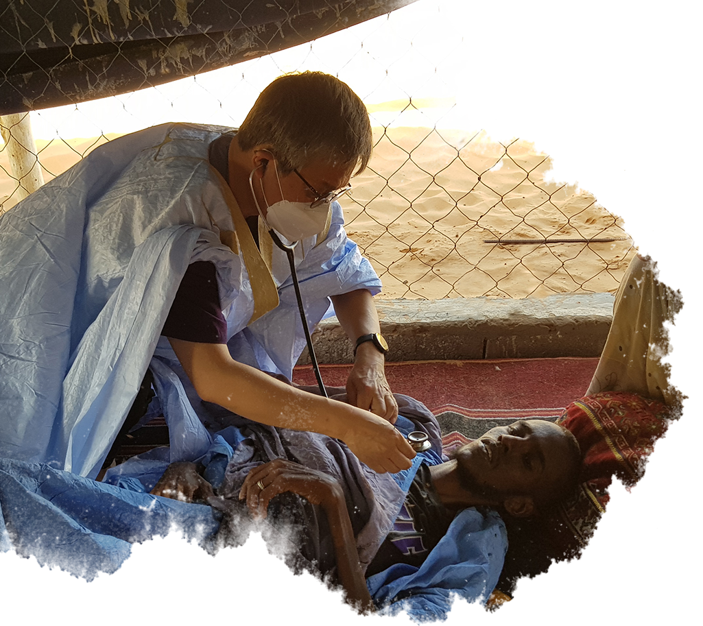
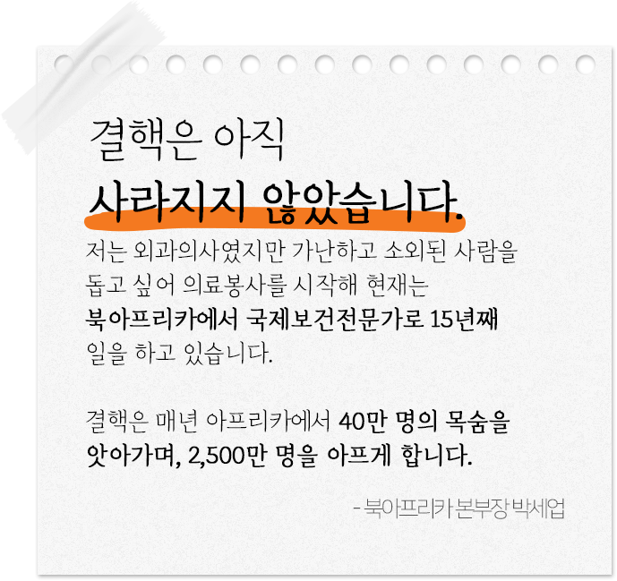
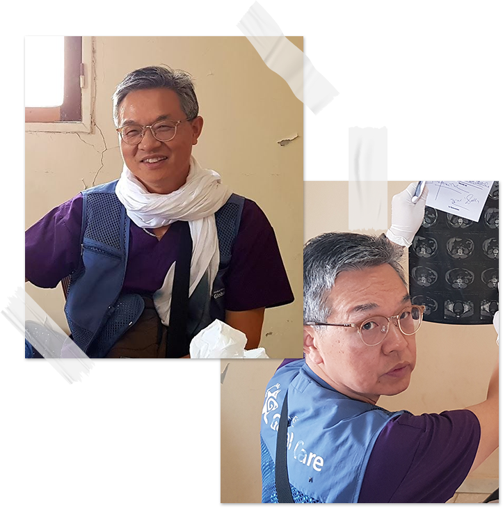
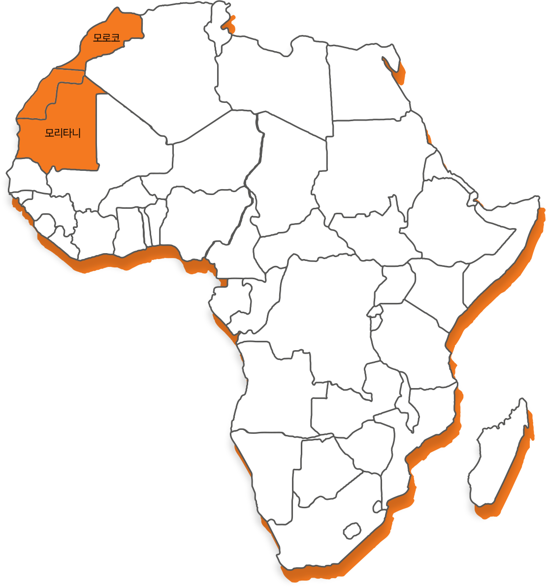
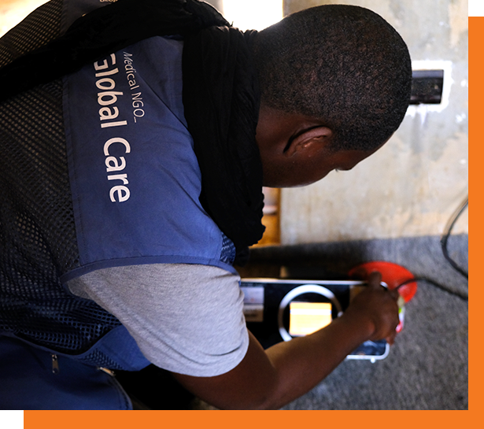

-

결핵약은 국가에서 제공하지만,
결핵 치료는 약만으로 해결되지 않습니다.
혼자 힘으로 이겨내기 힘든 결핵,
반드시 도움이 필요합니다.
혼자가 아닌 함께하는 결핵 치료
보건요원이 치료 과정 내내 함께 합니다.
- 꾸준히 연락하고 방문하여 환자가 치료를 포기하지 않도록 해줘요.
- 결핵약 먹을 시간을 알려주는 ‘스마트 약상자’ 를 가정에 나눠줘요.
- 취약계층을 위한 각종 검사비용과 식료품을 제공해요.
- 결핵을 함께 극복하도록 환자들의 자조모임(TB Club)을 운영 해요
그 결과
북아프리카 결핵 환자 1,000명과 4,000명의 가족 그 외
수천 명의 지역사회 주민을 도울 수 있어요
모로코 4개 지역 (라밧, 살레, 케니트라, 탕헤르)과 모리타니 1개 지역 (누악쇼트)

보건요원과 함께하는
결핵 치료가 가져온 놀라운 변화
